Closet
Cocina
Espejo
Animal Route
Integra
APPFLORAL
BAMBALINE
Patos Mosaico
Silla Cuero
Patos Talavera
Superternurin
Reyes Payasos
✕
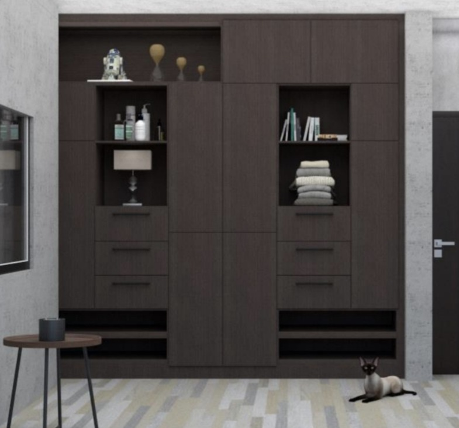
Closet de Oficina
Optimización de espacios con elegancia contemporánea.
✕
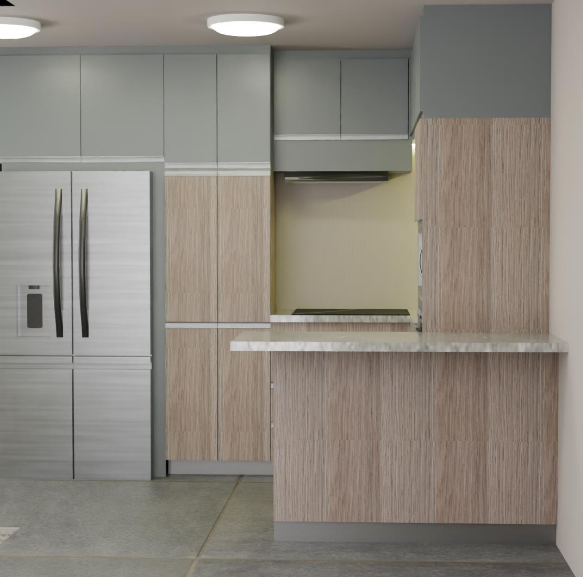
Cocina
Mezcla de madera con gris salvia sutil.
✕
Espejo Media Luna
Dinamismo visual y retroiluminación.
✕
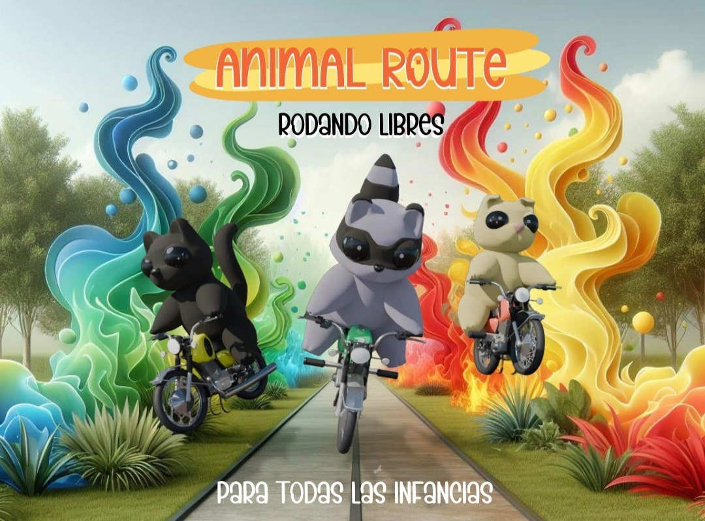
Animal Route
Juguetes con perspectiva de género.
✕
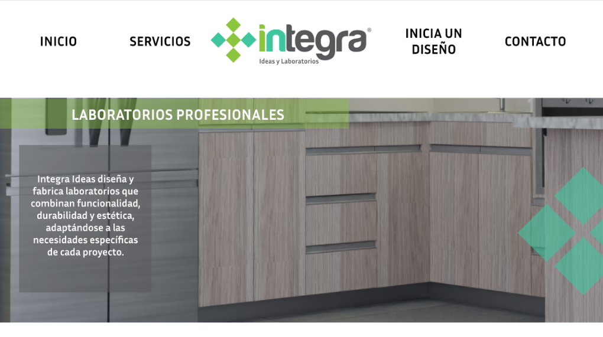
Integra Ideas
Interfaz para mobiliario especializado.
✕
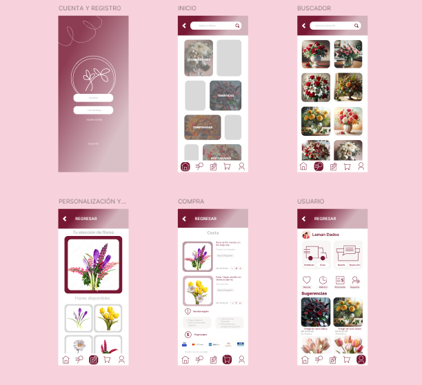
APPFLORAL
App para floreros de Edomex.
✕
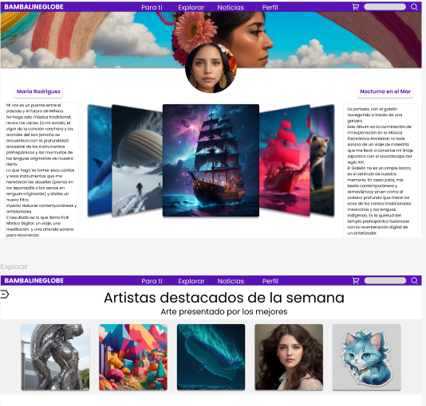
BAMBALINE
Proyecto de Tesis: artistas independientes.
✕
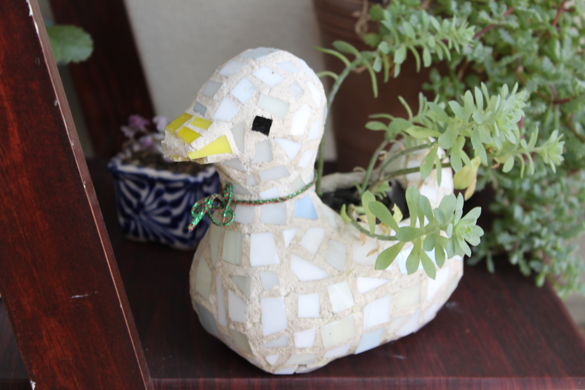
Patos Mosaico
Macetas de cerámica.
✕
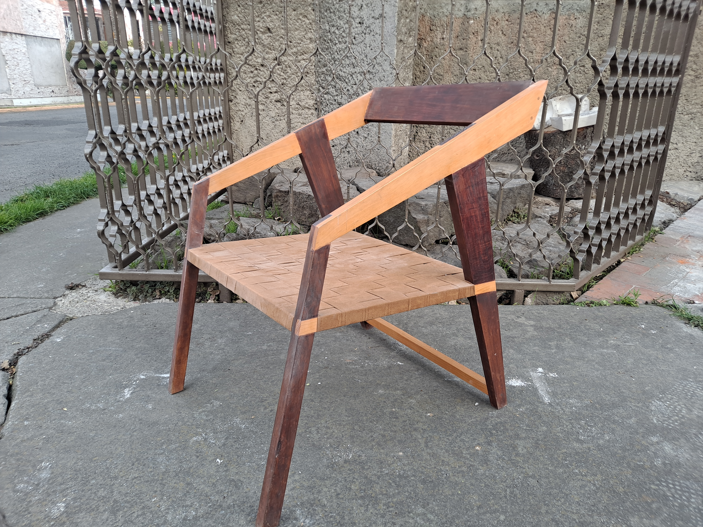
Silla Cuero
Madera de pino y cuero sintético.
✕
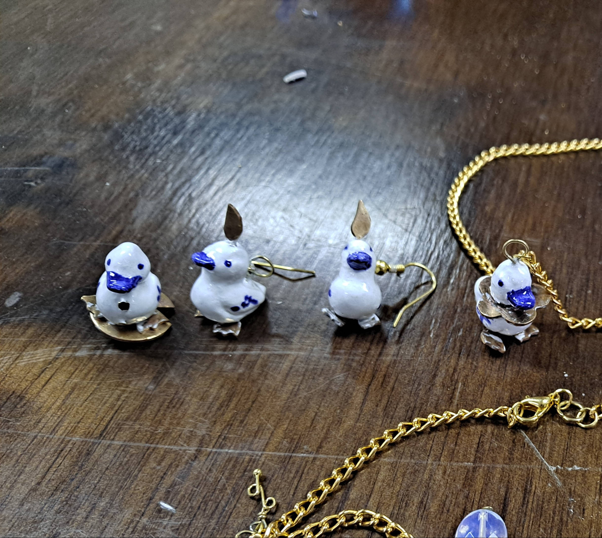
Patos Talavera
Joyería cerámica.
✕
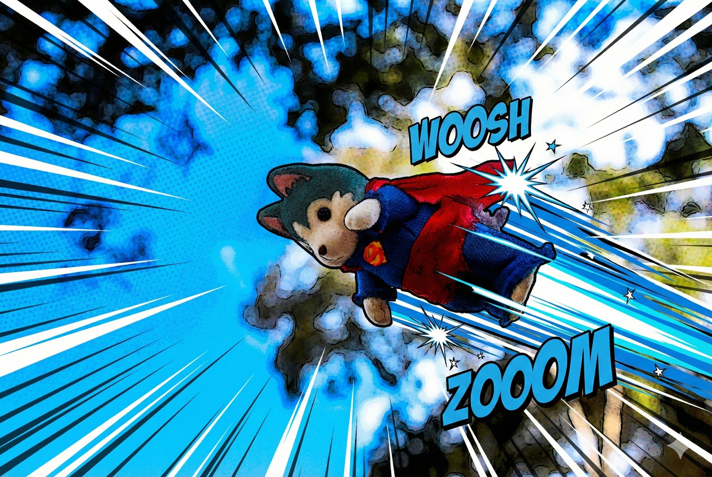
Superternurin
Confección textil miniatura.
✕
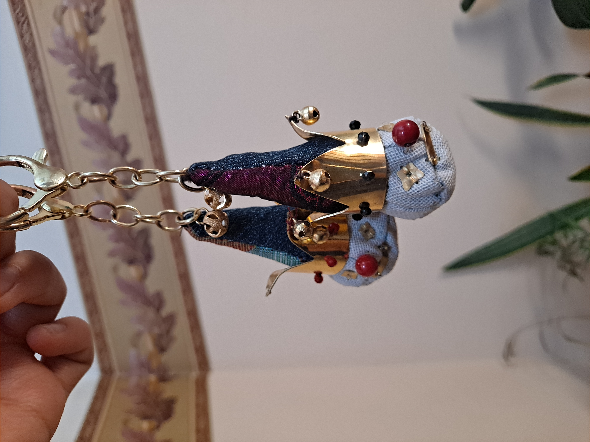
Reyes Payasos
Textil reciclado.